Hi there,
I am Sachin
An experience designer crafting digital experiences people love. 20 years in design, 8+ years in UI/UX — turning intricate B2B and B2C problems into clear, intuitive products.
My expertise lies in Interaction Design and Data Visualization. I convert intricate B2B and B2C solutions into clear, intuitive, and highly engaging digital experiences that drive user adoption.
Selected case studies
Enterprise products across AI, renewable energy, finance, asset management and Industry 4.0.
Confidentiality & project showcase statement
Due to the sensitive and proprietary nature of my work, many of the projects I complete for clients are protected by Non-Disclosure Agreements (NDAs).
- Protecting client IP: I prioritize the confidentiality of all my clients. The details, specific data, and core strategies of these confidential projects cannot be publicly shared here.
- Showcasing expertise: Where possible and with client permission, I am happy to showcase high-level outcomes, non-confidential summaries, and the technologies utilized. These entries focus on the problems I solved and the skills I employed, rather than the specific, protected client data.
- In-depth discussion: If you are interested in discussing specific project types or seeing more detailed, non-confidential case studies, I would be happy to schedule a private call to review examples that do not compromise any prior agreements.
SyntBot AI Chatbot
Designed an AI assistant chatbot UI for internal use.
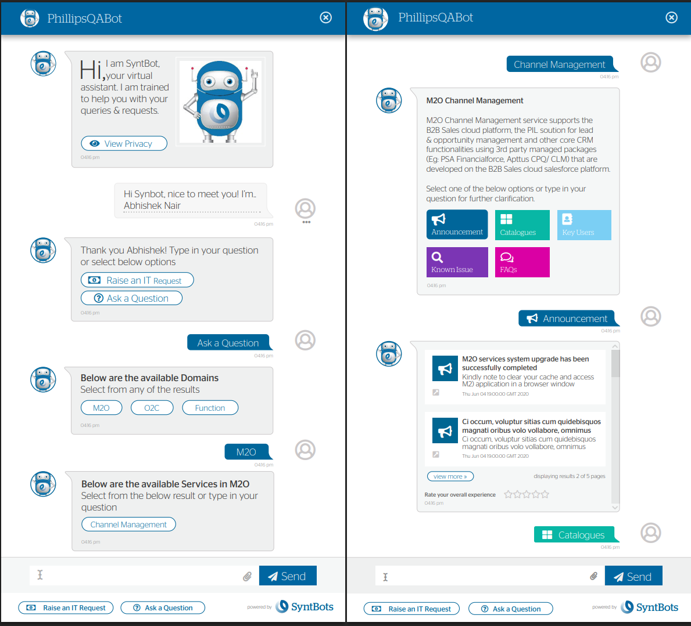
Inventory Management
Designed an inventory management system from scratch that helps virtual tracking of physical assets and their status.
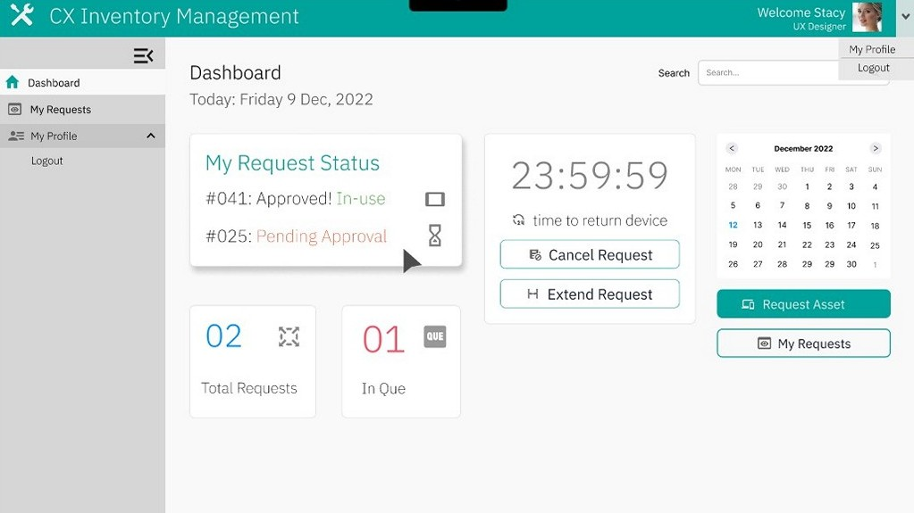
RESCA
Re-designed a remote windfarm monitoring, O&M system. Participated in ethnographic research and user interviews, and mapped the research findings into final designs.
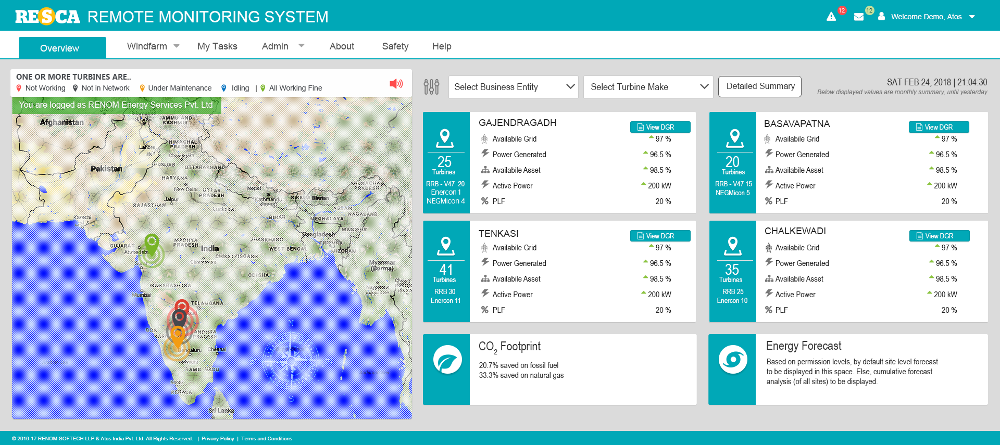
UX HUB
Managed execution, office branding, and design support in building an internal usability test lab facility.
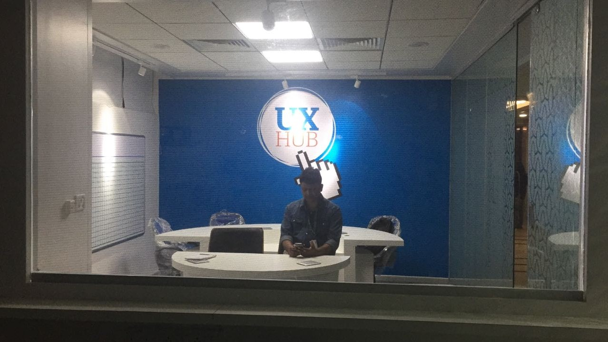
Mortgage Loan Reporting Utility
Designed and digitally transformed legacy app systems for a major finance and asset management giant in the US.
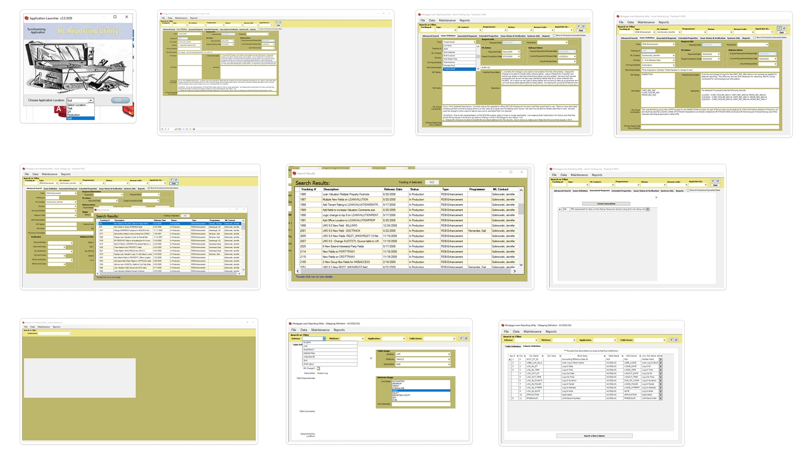
Digital Twin 4.0
Designed the Digital Twin 4.0 solution that caters to various sectors and creates a digital clone of physical assets and their processes.
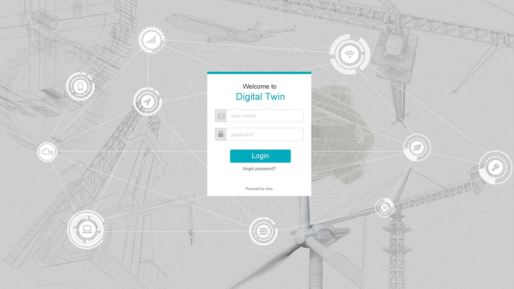
“Van A naar B” (from A to B)
Designed an offline training tool that helps people work on their personal goals.
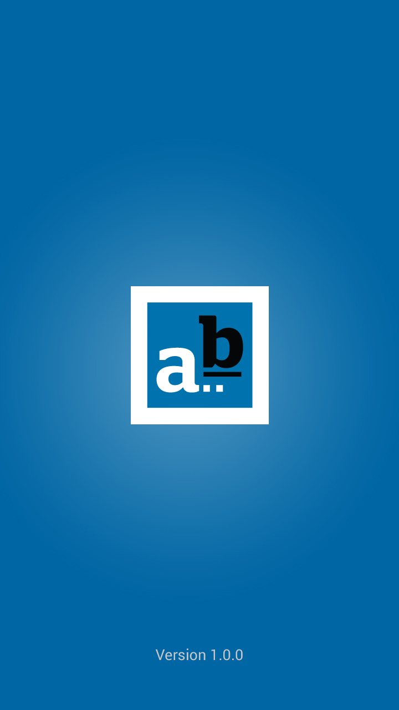
Reporting Database Change Facility
Designed and digitally transformed legacy app systems for a major finance and asset management giant in the US.
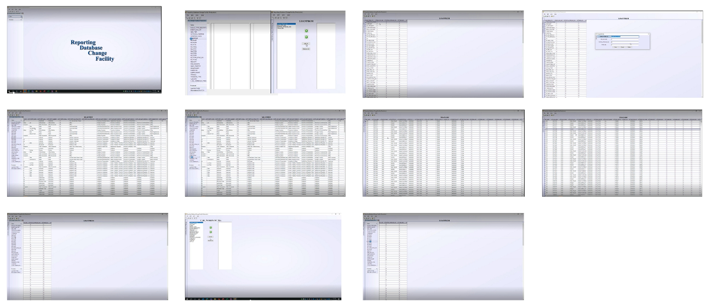
A bit about me
Designer, product thinker and a little bit of an engineer.
/Who am I.
I am a senior designer specializing in user-centric digital experiences. With 20 years of design experience (including 8+ years in UI/UX), I transform complex B2B and B2C challenges into engaging solutions.
My industry experience spans renewable energy, manufacturing, logistics, fintech, asset management, and HRIS legacy app modernization. I combine design, product thinking, and engineering to drive measurable results and innovation within Agile methodologies.
I am proficient in core UX tools like Figma, Axure RP, and the Adobe CC Suite, and I leverage immersive technologies for guaranteed cross-platform scalability and consistency.
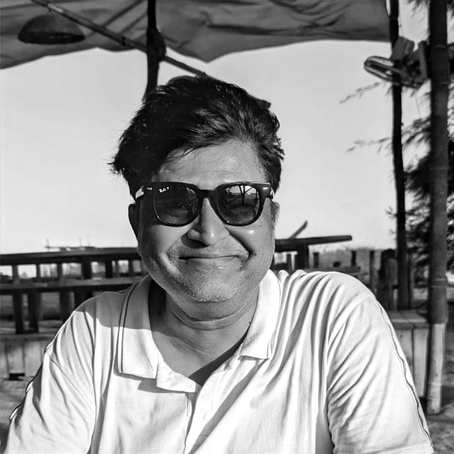
What I do
/Experience design
I’m an experience designer crafting digital experiences people love. I specialize in user-centric design solutions across domain industries within renewable energy, additive manufacturing, shipping & logistics.
/Design thinker
I’m a passionate designer, solving real-life issues through design thinking methodology. My expertise involves bridging the gap between humans and technology through intuitive, sustainable, viable, and user-friendly solutions.
/Visual branding
I am a creative designer specializing in visual storytelling that embodies your brand identity and leaves a lasting impression on your target audience.
/Ask me
Over 8+ years of practical experience in designing B2B and B2C solutions. A skilled designer with a strong focus on visual communication branding, web and mobile app design, as well as SharePoint administration and CMS implementation. Ask me FAQs →
My journey
Resume ↗-
Jul 2016 – Jul 2024
Atos Global IT Solutions & Services Pvt Ltd
Lead UX Designer / Sr. ConsultantStrategic UX leadership & digital transformation: Led enterprise UX initiatives, specializing in modernizing complex legacy applications, establishing a dedicated UX Lab, and pioneering solutions for global events (Olympic Ticketing) and Digital Twin 4.0 projects.
- Design system: Designed scalable systems, streamlining component reuse and reducing design inconsistencies across platforms.
- Cross-platform UX/UI: Designed scalable digital experiences for web, mobile, B2B, and B2C enterprise solutions, including Digital Twin 4.0 solutions within renewable energy, additive manufacturing, and healthcare services.
- Online ticketing system: Collaborated closely with client stakeholders, product owners, developers, the testing team, and the sales team. Captured business needs and drafted user stories for sprint planning to deliver seamless user experiences that met the business objectives for the Olympic and Paralympic Tokyo 2020 Games.
- Legacy app modernization:
- Led the digital transformation of legacy apps across Asset Management, Workforce Management System for Demand Creators and Project Managers, and HRIS systems.
- Consolidated 65+ solutions down to a minimum of 10 core applications, significantly reducing server cost associated with redundant unused apps.
- Enhanced usability and user performance through intuitive UI, resulting in improved user adoption and a 20% reduction in support overhead.
- User research & strategy: Conducted stakeholder interviews, journey mapping, and usability testing to drive UX improvements.
- BI dashboards & data visualization: Designed intelligent BI dashboards for executive decision-making, displaying real-time KPIs and allowing sharing and exporting of reports to the management team and client.
- Metaverse & AR/VR integration:
- Designed digital blueprints for NHS hospitals within the EU. Worked closely with 5+ dev team members and delivered quality output within the timeline for the bid.
- Collaborated with developers to integrate AR/VR features using immersive tech such as Frame VR, ensuring compatibility and UI/brand consistency across platforms.
- Designed & configured multiple screen layouts for exhibition stall displays, tour maps, and display kiosks within Frame VR.
- Provided integration support and testing across AR, VR, and immersive devices.
-
May 2010 – Jul 2015
SunGard Global Solutions (I) Pvt Ltd / FIS
Consultant, SharePoint & Comms ExpertCommunications & digital infrastructure consulting: Acted as a SharePoint and Communications Expert, managing global digital assets (intranets) and driving internal change management and user adoption strategies.
-
Dec 2007 – Nov 2009
Smartsourcing Global (I) Pvt Ltd
Graphic & Web DesignerWeb asset management & visual communication: Designed and implemented user-facing websites for the logistics and hospitality sectors, focusing on visual communication and early web development skills.
-
Oct 2006 – Nov 2007
Digikore Studios Pvt Ltd
Comic Book Pre-Production / Lead Colourist & Digital ArtistSpecialized creative production: Served as a Lead Colourist and Digital Artist for international comic book giants (e.g. Marvel/DC), building a foundation in specialized digital artistry and precise creative delivery.
🎖️ Recognitions
- 2023Spot Award — recognized for rapidly prototyping Business Intelligence (BI) dashboards in the manufacturing sector, accelerating decision-making processes.
- 2022Kudos Award — for spearheading Atos’s Metaverse-ready digital journey initiative, positioning the organization at the forefront of spatial computing.
- 2020Spot Award — for successful modernization of critical legacy systems, leading to a demonstrable reduction in maintenance costs and significant improvement in user adoption.
- 2018Major achievement — designed and launched a dedicated UX Lab facility from the ground up, establishing a centralized hub for advanced user testing and intensive stakeholder engagement.
- 2013Laureate Award — for launching SunGard TV, a key project that significantly boosted internal communications and employee engagement.
- 2012–137 Kudos Awards — seven separate awards recognizing excellence in cross-functional collaboration and positive team contribution.
{?} Why me?
- 8 years leading Design Systems, ensuring sustainable, scalable UI solutions.
- Hands-on experience in UX Research, Experience Design, Interaction Design, and Usability.
- Strong experience in cross-functional team collaboration, lean & agile UX.
- Proven track record in modernizing enterprise-level legacy applications, driving digital transformation of complex data systems within finance, HRIS, demand management systems and more.
- Hands-on experience in corporate communications and brand value proposition — managing and maintaining digital assets, internal events, creative execution and end-to-end campaigns through screensavers, CMS updates, digital signage & TV, social media branding, pre/post leadership townhalls and management updates.
Key achievements
- Received 7 internal and external recognitions for delivering transformative UX solutions ahead of schedule.
- Designed and launched a UX Lab from scratch, enabling advanced user testing and stakeholder engagement.
- Modernized legacy systems, resulting in reduced maintenance costs and improved user adoption.
“Thanks for playing a critical role as part of the UX design process:”
- Introduction to rapid prototyping helped us gain instant customer feedback, which helped quick design overviews and saved a lot of design iteration & effort.
- Mentoring junior designers within the team and making them aware of the design thinking process.
- Your value-added feedback on all FX projects, before final design hand-off, helped us deliver quality output to the customer.
“I’ve been amazed at how often those outside the discipline of design assume that what designers do is decoration. Good design is problem solving.”
“The first step of any design process is to learn from others who have solved it before.”
Education & certifications
- Jan 2000 – Jun 2023User Research Methods and Best PracticeIDF International
- Jan 2020 – Mar 2021Design ThinkingIDF International
- Aug 2018 – Oct 2020Diploma in Drawing and PaintingKalasagar Kala Mahavidyalay, Manik Baugh, Sinhagad Road, Pune
- Mar 9th – 20th, 2015Trained Certified Usability Analyst (CUA)Human Factors International (HFI), Mumbai
- Apr 2000 – Dec 2000Advanced Diploma in Multimedia (ADIM)ARENA Multimedia, Dhole Patil Road, Pune
- Aug 1990 – Apr 1994Diploma in Applied ArtAbhinav Kala Mahavidyalaya, Tilak Road, Pune
Skills & toolkit
Here’s the toolkit I reach for while crafting user experiences.
Technical
Prototyping / Design
Project management
Design suite
 Adobe XD
Framer
Figma
Adobe XD
Framer
Figma
 InVision DSM
InVision DSM
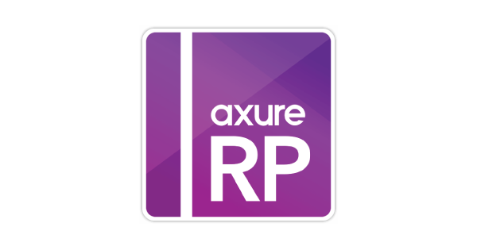
Axure RPBrainstorming
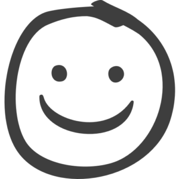
Balsamiq Gliffy
Gliffy
 Draw.io
Draw.io
Front-end basics
 HTML5
HTML5
 CSS3
CSS3
 Bootstrap
Bootstrap
 JavaScript
JavaScript
Framework familiarity
 React
React
 Angular
Angular
 Material UI
Power BI
Material UI
Power BI
 Qlik
Qlik
CMS & immersive
 SharePoint
Wix CMS
SharePoint
Wix CMS
 Frame VR
Frame VR
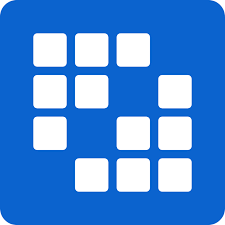
LiferayGraphic design & print
 InDesign
InDesign
 CorelDRAW
CorelDRAW
Frequently asked
How I think, work and measure success.
What influences your design aesthetic?
Design aesthetic is influenced by user needs & desires, and business goals. Minimalistic design focussed on user tasks and goals, subtle brand identity, industry standards, and personal inspiration from design communities and real-world experiences. Continuous learning, and staying attuned to user feedback and business objectives, ensures the aesthetic remains relevant and effective.
How do you keep your skills updated with design trends?
Skills are kept current through continuous learning — attending webinars, reading industry blogs, participating in design communities, and experimenting with new tools and techniques. Regularly reviewing case studies and best practices also helps me stay informed & updated.
What are the biggest challenges you face as a UI/UX designer?
Challenges include balancing user needs with business goals, managing stakeholder expectations, and keeping up with rapidly evolving design trends and technologies. Resistance to change, delivery timeline constraints and limited resources can also pose obstacles.
What methods do you use to communicate value to non-design stakeholders?
Value is communicated through clear, data-driven presentations, user stories, and visualizations like journey maps, empathy maps and A/B testing comparisons. Demonstrating how design changes impact key business metrics helps non-design stakeholders understand the tangible benefits.
Can you give an example where your design improved a business metric?
For example, redesigning the performance metric dashboard UI for a remote windfarm operations & maintenance site led to an increase in app usage. The intuitive KPI dashboard led to a 20% reduction in training time, and improved asset maintenance and mean-time-to-react vs mean-time-to-respond (MTTR), directly impacting revenue and reducing dependency on OEMs.
How do you define and measure design success or ROI?
Design success is typically measured by improvements in usability metrics (e.g. task completion rates, minimal error rates), end-user satisfaction, and business outcomes such as increased conversion rates, reduced training time or fewer support tickets — and reduced cost through predictive maintenance and real-time data reporting. ROI is calculated by comparing the cost of design changes to the resulting business benefits.
How do you handle conflicts or design disagreements within a project?
Conflicts are managed by fostering open communication, actively listening to all perspectives, and focusing on shared goals. Data-driven decisions, user feedback, and collaborative workshops help resolve disagreements and ensure solutions are user-centered and aligned with business objectives.
What tools do you use to ensure seamless teamwork?
Collaboration tools like Figma, FigJam and Miro for real-time design collaboration and feedback; Jira, Trello, MS Teams and Slack for project management. These tools facilitate transparency, version control, and efficient communication among team members and stakeholders.
How do you involve stakeholders and developers early in the process?
Stakeholders and developers are involved from the outset through stakeholder mapping, kick-off workshops, and regular communication. Early involvement helps align expectations, clarify roles, and foster a shared vision. Workshops and collaborative sessions encourage active participation and build trust.
Can you describe your ideation and prototyping process?
Ideation involves brainstorming sessions, often using techniques like mind mapping or “How Might We” questions to generate creative solutions. Prototyping starts with low-fidelity sketches or wireframes, progressing to interactive prototypes for usability testing. Feedback is gathered and incorporated in an iterative cycle to refine the design.
What are your typical user research methods?
Common methods include user interviews, surveys, empathy mapping, customer journey mapping, and the 5 Whys technique to uncover root causes. Affinity diagrams help organize and synthesize insights from these activities, revealing patterns and key themes in user feedback.
How do you apply design thinking to new projects?
Design thinking is applied by starting with empathy — understanding the user’s needs, pain points, and motivations through interviews, surveys, and observation. The process is iterative, moving through stages of defining the problem, ideating solutions, prototyping, and testing. This approach ensures solutions are user-centered and address real challenges.
Your turn. Say hello
Let’s connect to discuss how I can contribute to your UX vision! Whether you’re building a website, a web/mobile app, or an immersive dashboard, I’d love to hear your story.